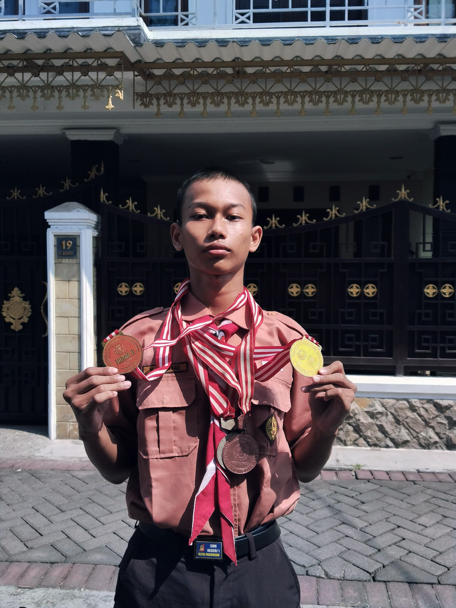

Hai, saya Muhamad Zaidan Faiz.
PENGEMBANG WEB FRONTEND
Mengubah desain kompleks menjadi aplikasi web yang cepat, interaktif, dan siap pakai. Saya membantu bisnis dan tim membangun produk digital yang tidak hanya estetis, tetapi juga nyaman digunakan dan siap berkembang.

Berbasis Di
Pasuruan, Jawa Timur
Sekilas Tentang Saya
Membangun solusi digital lewat perpaduan desain dan kode.
Berfokus pada pengembangan web modern menggunakan ekosistem Next.js dan Laravel. Berangkat dari latar belakang Rekayasa Perangkat Lunak (RPL) di SMK Negeri 1 Kota Pasuruan, saya terbiasa merancang antarmuka yang estetis sekaligus membangun sistem yang rapi, skalabel, dan siap digunakan di dunia nyata.
UI/UX
Desain Responsif & Presisi
Full-Stack
Next.js & Laravel 12
Clean Code
Cepat & Mudah Dikelola
Keahlian Teknis
Teknologi yang saya gunakan
setiap hari.
Bukan sekadar daftar di atas kertas, melainkan tech stack utama yang saya gunakan untuk membangun proyek dari nol — mulai dari merancang UI di Figma, menulis kode antarmuka yang responsif, hingga mengelola basis data.
Karya Pilihan
Solusi nyata yang dirancang dari nol hingga siap rilis.
ZiFood — Platform Pesanan UMKM
Membantu UMKM kuliner mendigitalkan proses pemesanan. Dilengkapi manajemen katalog dinamis, keranjang belanja interaktif, dan alur checkout ringkas yang dirancang untuk memangkas hambatan transaksi pelanggan.
Jurnal PKL — Sistem Laporan Magang
Mendigitalkan pemantauan magang sekolah secara real-time. Menghubungkan siswa, guru pembimbing, dan mitra industri dalam satu dasbor terpadu dengan sistem hak akses berlapis (multi-role) dan rekapitulasi otomatis.
Punya ide proyek?
Mari wujudkan bersama.
Saat ini saya terbuka untuk proyek freelance (pembuatan web profil bisnis, landing page, maupun aplikasi web kustom), peluang magang, serta kolaborasi tim. Ceritakan kebutuhan Anda, dan mari kita diskusikan solusi terbaiknya.
Butuh respon cepat?
Chat langsung dengan saya.
Tanya soal proyek, kolaborasi, atau konsultasi gratis. Biasanya saya balas dalam 1-2 jam.
- Respon cepat, langsung ke saya
- Konsultasi awal gratis & tanpa komitmen
- Riwayat chat tersimpan otomatis
Percakapan bersifat privat & aman
Atau kirim email
Kalau lebih nyaman berdiskusi via email, saya juga aktif setiap hari di sana.